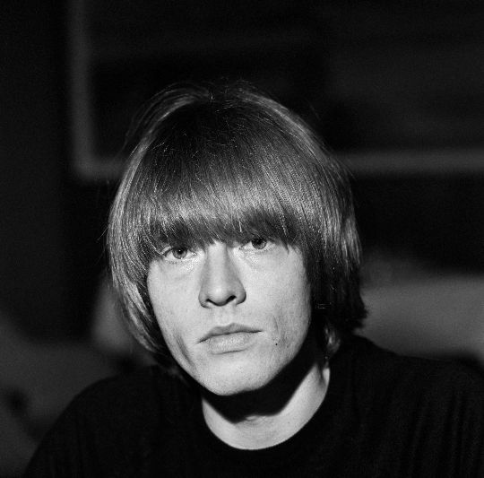

The Brian Jones Rolling Stones story starts in 1962, when a blues-obsessed 20-year-old guitarist built a band and gave it its name.
Most retellings skip straight to Mick Jagger and Keith Richards.
Jones was there first, and without him there is no band to take over.

Table of Contents
- The Brian Jones Rolling Stones Origin Story
- How Jagger and Richards Took Over the Band
- Brian Jones's Exit and Death
- FAQ
The Brian Jones Rolling Stones Origin Story
Brian Jones grew up playing piano, clarinet, and saxophone before falling hard for American blues.
By early 1962 he was recruiting musicians in London under the stage name Elmo Lewis.
Jagger and Richards Join a Band That Already Existed
Mick Jagger and Keith Richards were childhood friends from Dartford who had reconnected by chance in 1960.
Both were obsessed with rhythm and blues records.
Jones brought them into his lineup, along with pianist Ian Stewart, as fellow blues devotees rather than as co-founders.
A Name Grabbed Off the Floor
The band played its first show as the Rollin' Stones on July 12, 1962, at London's Marquee Club.
They still didn't have a settled name days before that gig.
Jones was on the phone with a jazz magazine, needed something to tell them, and spotted a Muddy Waters record on the floor.
Its title was "Rollin' Stone."
He named the band on the spot.
The Crawdaddy Club Built Their Following
Early manager Giorgio Gomelsky secured the band a Sunday afternoon residency at the Crawdaddy Club in Richmond, London, in February 1963.
That weekly slot is where the Rolling Stones built the loyal local crowd that eventually caught the industry's attention.
Pianist Ian Stewart was still a full member of the lineup at the time.
How Jagger and Richards Took Over the Band
Manager Andrew Loog Oldham took charge of the band's image in 1963, just 19 years old himself.
His masterstroke was pushing Jagger and Richards to write original songs instead of only playing blues covers.
Ian Stewart Cut for Not Fitting the Image
Oldham decided a six-piece band was too many faces to sell as teen idols.
He removed pianist Ian Stewart from the official lineup in May 1963, judging that Stewart's look didn't fit the image he was building.
Stewart kept playing on Rolling Stones records anyway, and worked as the band's road manager for over two decades until his death.
It was an early sign of how ruthlessly Oldham would reshape the band around Jagger and Richards.
The Songwriting Team That Changed the Balance of Power
Jagger and Richards became one of rock's most successful songwriting partnerships.
That shifted the band's creative center away from Jones, who had built it as a blues purist's project.
Jones remained a brilliant multi-instrumentalist on record, adding sitar, marimba, and various keyboards to the band's sound.
But he had less and less say in the direction of the music he had started.
Brian Jones's Exit and Death
Jones's alcohol and drug problems grew through the mid and late 1960s.
His playing in the studio became increasingly unreliable.
Dismissed From His Own Band
The Rolling Stones dismissed Jones in June 1969.
Guitarist Mick Taylor replaced him within weeks.
Dead Within a Month
Brian Jones drowned in his swimming pool on July 3, 1969.
He was 27 years old, and it had been less than a month since he left the band he founded.
Coroner Angus Sommerville recorded a verdict of misadventure at the inquest.
The official cause was drowning, complicated by liver damage from years of heavy drinking and drug use.
Jones is counted among the earliest members of the so-called 27 Club, musicians who all died at that same age.
FAQ
Who founded the Rolling Stones?
Brian Jones founded the Rolling Stones in London in 1962.
He recruited Mick Jagger and Keith Richards, both rhythm and blues fanatics, to join him.
Where does the Rolling Stones name come from?
Brian Jones named the band on the spot during a phone call to a jazz magazine.
He'd spotted a Muddy Waters record called "Rollin' Stone" on the floor.
Why did Brian Jones leave the Rolling Stones?
The band dismissed Jones in June 1969 after years of declining reliability tied to alcohol and drug problems.
They replaced him with guitarist Mick Taylor.
How did Brian Jones die?
Brian Jones drowned in his swimming pool on July 3, 1969.
That was less than a month after leaving the band he had founded, at age 27.
Brian Jones built the band, named it, and lost it within seven years, one of the most overlooked founder stories in rock.
Read more on the wider British Invasion & Beat Music movement his band helped define.
Back to the 1960smusic.net homepage to explore every genre of the decade, starting with the Brian Jones Rolling Stones story itself.